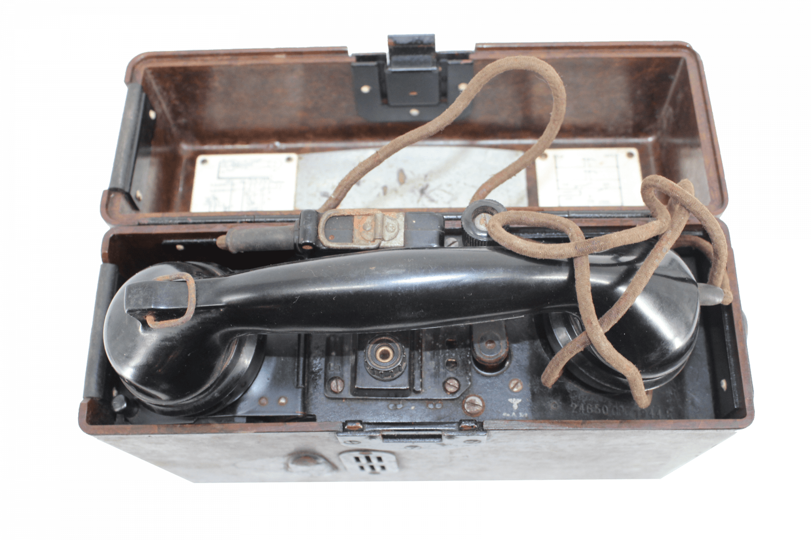

FERNSPRECHDIENST
FF33 · Feldfernsprecher 33
Robuuste OB-veldtelefoon uit 1933: lokale batterij, Kurbelgenerator, La/Lb-E en verbinding over één of twee aders.
OPEN DOSSIER
Sleep de kaart, zoom met het muiswiel en kies een locatie. R616 staat bij openen en reset centraal.

De Morswegbunker werd in 1943 gebouwd als zwaar beschermd communicatieknooppunt.
 HUIDIGE SITUATIE
HUIDIGE SITUATIE STRAATZIJDE
STRAATZIJDE INTERIEUR · KEV
INTERIEUR · KEV GASSLUIS
GASSLUIS NOODUITGANG
NOODUITGANGBeweeg de muis over het model om het subtiel te draaien. Zoom met muiswiel of pinch. Het model zelf kan niet worden gewijzigd.
Meet een telefoonlijn en lokaliseer de storing.
Neem een FF33-oproep aan en kies de juiste verbinding.
Onderzoek locaties en onderscheid feit van hypothese.
Bouwgeschiedenis, plattegronden en bouwsporen.
Foto en krantenbron over de daadwerkelijke slooppoging.
OPEN DOSSIERHistorische opmeting nabij de voormalige PTT-centrale.
ONDERZOEKTechnische dossiers van de systemen en functies die de R616 als communicatiebunker lieten functioneren.

Robuuste OB-veldtelefoon uit 1933: lokale batterij, Kurbelgenerator, La/Lb-E en verbinding over één of twee aders.
OPEN DOSSIER
Waterdichte eindsluiting én verdeler voor ondergrondse papier-lood telefoonkabels.
OPEN DOSSIER
Luchtbehandeling en overdruk, gekoppeld aan de huidige schakelruimte.
OPEN DOSSIERGasdichte overgang tussen buitenwereld en beschermde binnenruimte.
Mechanische spraakverbinding zonder elektriciteit of telefoonnet.
OPEN DOSSIERWaarnemersfunctie voor het doorgeven van relevante informatie aan de bemanning.
OPEN DOSSIERAlternatieve uitgang van de bunker; huidige foto vanuit de gang is beschikbaar.
OPEN DOSSIERSchakel- en verdeelapparatuur voor de elektrische installatie en verlichting.
Bescherming tegen verder verval.
Passende veilige toegangsdeuren.
Voor verlichting, monitoring en interactieve techniek.
Stichting Bunker Leiden werkt aan behoud, inrichting en educatieve ontsluiting van de telefoonbunker aan de Morsweg.
RSIN 867084182
Voorzitter R. de Boer
Secretaris E.C.P. Hoogeveen
Penningmeester F.F.H.J. van der Reijden-Chen
Bestuurder/Bouwheer J. Wesselius
P/a Van Banchemhof 9, 2321 EM Leiden
bunkerleiden@gmail.com